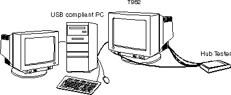
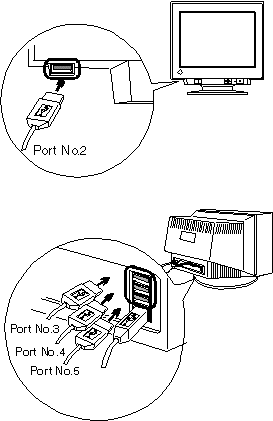
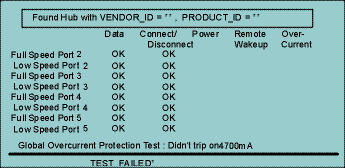
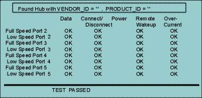

USB Hub Operation Test
Test Procedure
In case of installing Hub Tester Program in the root of the
"C" drive.
- Turn on the Hub Tester.
Turning on, confirm the PWR LED lights (Red) and the DATA LED
blinks (Yellow). Otherwise, try to unplug and plug the power
cord of the tester.
- Connect the USB cables.
Upstream port x 1 cable --- Host PC
Downstream ports x 4 cables --- Hub Tester


- Switch the monitor on and set up the USB Hub.
Confirm if the following is in the "Device Manager"
window:
- "Generic USB Hub" appears under "Universal Serial
Bus Controller"
- Restart the PC in the MS-DOS mode.
C: \WINDOWS>
- Type as follows;
C: \WINDOWS>cd\uht\2.10
C: \uht\2.10>b
(Perform the test program "b")
When the test program "b" is O.K, the result is displayed
below.

"TEST FAILED" is displayed, but test result is OK because
of the over-current protection test program.
- Type as follows; (Perform the test program "a")
C: \uht\2.10>a
When the test program "a" is O.K, the result is displayed
below.

- Confirm the result of the above 2 programs is O.K. Perform
this test in both bus-powered and self-powered.
- Quit the MS-DOS mode.
C: \uht\2.10>exit
|
When connecting the channels (CH1~4) to the downstream ports
(Port 2~5) as the above drawing shows, the result is displayed
above. Even if connecting to different ports, it is no problem
if the result is O.K.
The sta files (O.K) and fal files (N.G) remains in the folder
2.10 as the result data of the test, so delete these files regularly. |
|